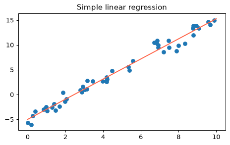
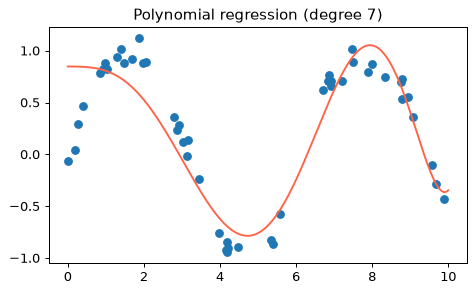

- Handbook 5.06 In Depth: Linear Regression
単回帰：直線を当てはめる
特徴量が1つの単回帰は、データに最もよく合う直線 y = ax + b を探します。aが傾き（coef_）、bが切片（intercept_）です。
from sklearn.linear_model import LinearRegression rng = np.random.RandomState(1) x = 10 * rng.rand(50) y = 2 * x - 5 + rng.randn(50)
model = LinearRegression(fit_intercept=True) model.fit(x.reshape(-1, 1), y) print('slope :', model.coef_[0].round(3)) print('intercept:', model.intercept_.round(3))
本当の値は 傾き2・切片-5。ノイズがあるので少しずれますが、近い値が復元できました。
xfit = np.linspace(0, 10, 100) yfit = model.predict(xfit.reshape(-1, 1)) plt.scatter(x, y) plt.plot(xfit, yfit, color='tomato') plt.title('Simple linear regression')

傾きは「xが1増えるとyがどれだけ増えるか」。切片は「x=0のときのy」。
xとyに直線を当てはめて、傾きを slope に入れてください。
model = LinearRegression().fit(x.reshape(-1, 1), y) slope = model.coef_[0]
y = 2x + 1 なので傾きは2です。
重回帰：特徴量が複数
特徴量が複数なら重回帰。直線が「平面」や「超平面」になるだけで、使い方は同じです。
rng = np.random.RandomState(1) X = 10 * rng.rand(100, 3) y = 0.5 + np.dot(X, [1.5, -2.0, 1.0]) # ノイズなし model = LinearRegression().fit(X, y) print(model.intercept_.round(3)) print(model.coef_.round(3))
ノイズなしなら、真の係数 [1.5, -2, 1] と切片 0.5 がぴったり復元されます。
print(round(model.score(X, y), 3)) # 決定係数 R^2
係数ごとに「その特徴量が1増えたとき、他を固定した場合のyの増え方」を表します。
上の model に [[1, 1, 1]] を入れたときの予測値（スカラー）を p に入れてください。
p = model.predict([[1, 1, 1]])[0]
0.5 + 1.5 - 2 + 1 = 1.0 です。
基底関数と多項式回帰
特徴量を変換して増やす（基底関数）と、「係数については線形」のままで曲線が表せます。代表が多項式回帰で、x → [x, x², x³] と変換してから線形回帰します。
from sklearn.preprocessing import PolynomialFeatures from sklearn.pipeline import make_pipeline x = np.array([2, 3, 4]) poly = PolynomialFeatures(3, include_bias=False) poly.fit_transform(x[:, None])
rng = np.random.RandomState(1) x = 10 * rng.rand(50) y = np.sin(x) + 0.1 * rng.randn(50) model = make_pipeline(PolynomialFeatures(7), LinearRegression()) model.fit(x[:, None], y) xfit = np.linspace(0, 10, 500) plt.scatter(x, y) plt.plot(xfit, model.predict(xfit[:, None]), color='tomato') plt.title('Polynomial regression (degree 7)')

式の形は y = a0 + a1x + a2x² + …。xの式は曲がっていても、係数aについては直線的なので線形回帰で解けます。
x = [1, 2, 3]（x[:, None]で2次元）にPolynomialFeatures(2, include_bias=False)を適用した結果を F に入れてください。
F = PolynomialFeatures(2, include_bias=False).fit_transform(x[:, None])
列は x と x² で、形は (3, 2) です。
正則化：RidgeとLasso
基底関数を増やすと係数が暴れて過学習しやすくなります。そこで係数の大きさにペナルティをつけるのが正則化です。
- Ridge（L2）：係数の2乗の和を小さく。係数を全体的に縮める。
- Lasso（L1）：係数の絶対値の和を小さく。不要な特徴量の係数をちょうど0にする。
from sklearn.linear_model import Ridge, Lasso rng = np.random.RandomState(0) X = rng.randn(60, 5) y = 3 * X[:, 0] - 2 * X[:, 1] + 0.5 * rng.randn(60) # 使うのは最初の2列だけ print('OLS :', LinearRegression().fit(X, y).coef_.round(2)) print('Ridge:', Ridge(alpha=10).fit(X, y).coef_.round(2)) print('Lasso:', Lasso(alpha=0.3).fit(X, y).coef_.round(2))
Ridgeは係数を少し縮め、Lassoは関係ない3つの特徴量の係数を0にしました。alphaが正則化の強さ（大きいほど強い）です。
Ridge＝「みんな控えめに」、Lasso＝「いらない子は0に」。
x と y に Ridge(alpha=1.0) を当てはめ、傾きを slope に入れてください。
slope = Ridge(alpha=1.0).fit(x.reshape(-1, 1), y).coef_[0]
普通の回帰の2より少し縮んで約1.818になります。